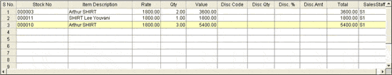
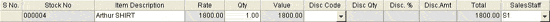

The detail part of a sales advice slip is displayed.
Item Details grid

Direct Entry grid

The details in both the grids are the same. Data entry is done in Direct Entry grid. Press F11 to enter the items in the Direct Entry grid. The columns displayed in the grids can be configured here.
S No.: The serial number of the transaction is displayed.
Stock No: Enter the stock number of the item or select it from the Browse window that displays on pressing F2.
Item Description: The description of the selected item is displayed in this field.
Rate: The rate of the item is displayed. You may alter the rate, if configured. If multiple prices are available for an item (based on system parameter settings for Item Classification), a Browse is displayed. Select the price from the list.
Note: You can set multi-price for an item here.
Qty: Enter the quantity of the item being sold.
Note: You can edit the quantity of an item (even if LSQ is set) by pressing the Hotkey, F3. This facility is based on the system parameter, Enable Only Quantity Editing Option in Billing.
You can also configure to make Sales Advice Slip, even if the specified quantity of the item is not available as per the Item Master, based on parameter setting and the related General Lookup entries. Click here to know the details.
Note: If Least Saleable Quantity (LSQ) is set in Item Masters, then the Qty entered should be in multiples of LSQ.
Value: The computed value of Item Rate * Item Qty is displayed in this field.
Disc Code: Select the required discount code applicable to the item.
Disc Qty: If the scheme is for a last piece discount, the quantity is displayed. Shoper can be configured to display the value of last piece discount quantity of the item.
Disc. %: The discount value in percentage (%) relating to discount scheme is displayed.
Disc. Amt: The corresponding value of the discount in amount is displayed.
Total: The sale value of the selected item after discount is displayed.
SalesStaff: Select the sales staff Id, if different items are handled by different sales person from the list. For each item in the sales advice slip the respective sales staff can be selected.
Note: By double clicking on any of the items present in the Item Details grid, the item is brought to the Direct Entry grid where it can be edited as required. To delete any item from the Item details grid, you have to select the item by clicking and then press Ctrl+D when it is highlighted.